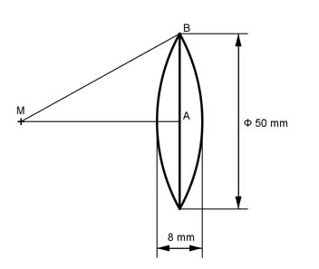

Aufgabe 383 Wie groß ist die Masse m der symmetrischen Linse bei einer Dichte von 3,1 g/cm³?  Satz von Pythagoras im Dreieck MAB: MB = r MA = r - 8/2 = r - 4 AB = 50 mm/2 = 25 mm r² = (r - 4)² + 25² r² = r² - 8 * r + 16 + 625 |-r² 0 = - 8 * r + 641 |+8 * r 8 * r = 641 |:8 r = 80 mm Volumen V von 2 gleich großen Kugelabschnitten: h = 8 mm/2 = 4 mm л V = 2 * --- * h² * (3 * r - h) 3 л V = 2 * --- * 4² * (3 * 80 - 4) mm³ = 7 904 mm³ = 7,9 cm³ 3 m = V * ρ = 7,9 cm³ * 3,1 g/cm³ = 24,5 g